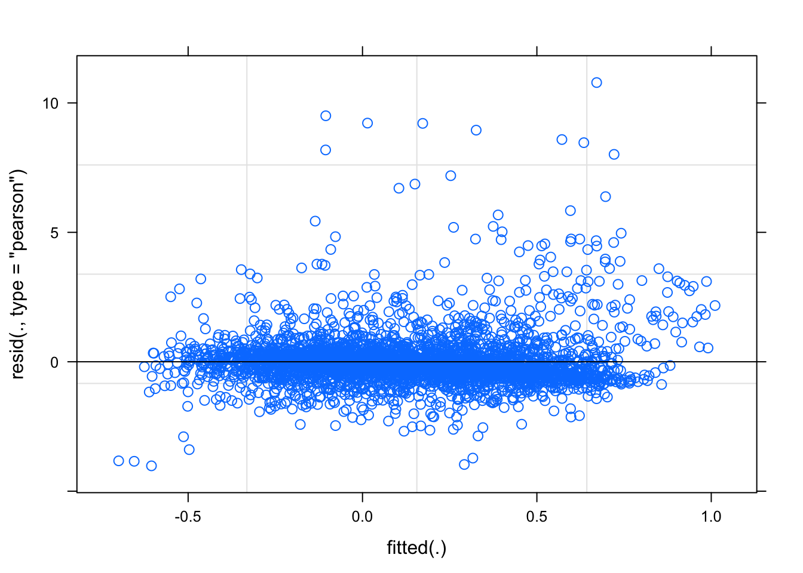
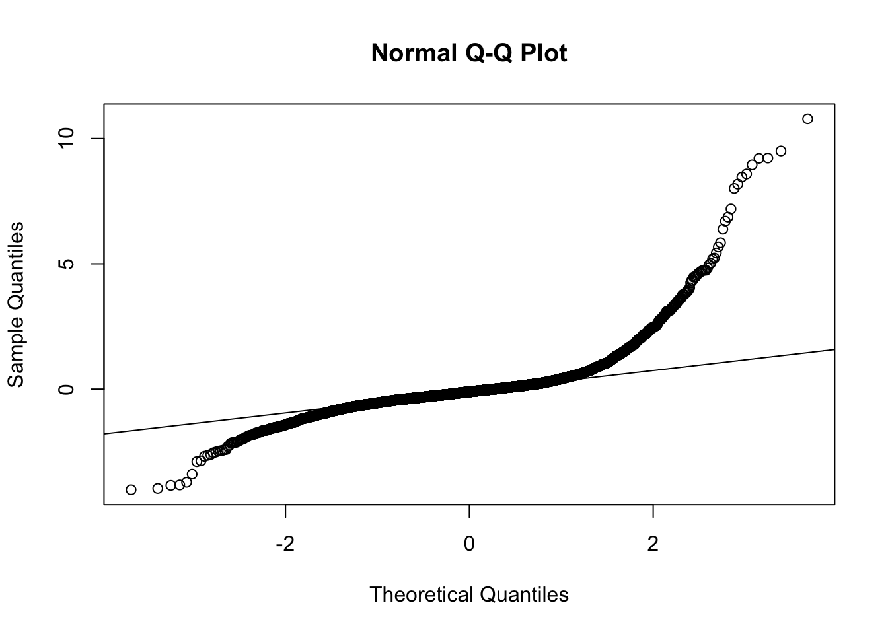
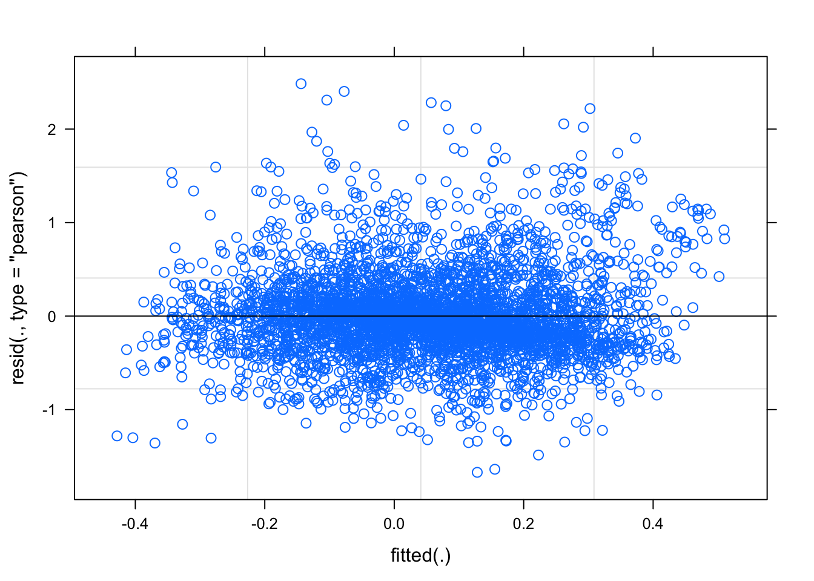
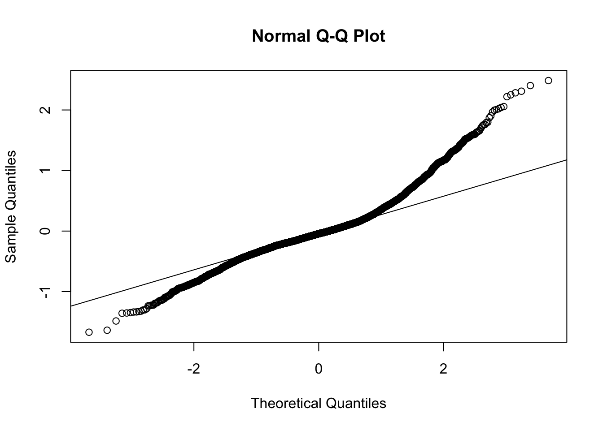

Last updated: 2020-09-01
Checks: 7 0
Knit directory: dynamicRFM/
This reproducible R Markdown analysis was created with workflowr (version 1.6.2). The Checks tab describes the reproducibility checks that were applied when the results were created. The Past versions tab lists the development history.
Great! Since the R Markdown file has been committed to the Git repository, you know the exact version of the code that produced these results.
Great job! The global environment was empty. Objects defined in the global environment can affect the analysis in your R Markdown file in unknown ways. For reproduciblity it’s best to always run the code in an empty environment.
The command set.seed(20200901) was run prior to running the code in the R Markdown file. Setting a seed ensures that any results that rely on randomness, e.g. subsampling or permutations, are reproducible.
Great job! Recording the operating system, R version, and package versions is critical for reproducibility.
Nice! There were no cached chunks for this analysis, so you can be confident that you successfully produced the results during this run.
Great job! Using relative paths to the files within your workflowr project makes it easier to run your code on other machines.
Great! You are using Git for version control. Tracking code development and connecting the code version to the results is critical for reproducibility.
The results in this page were generated with repository version d5b2b96. See the Past versions tab to see a history of the changes made to the R Markdown and HTML files.
Note that you need to be careful to ensure that all relevant files for the analysis have been committed to Git prior to generating the results (you can use wflow_publish or wflow_git_commit). workflowr only checks the R Markdown file, but you know if there are other scripts or data files that it depends on. Below is the status of the Git repository when the results were generated:
Ignored files:
Ignored: .DS_Store
Ignored: .Rproj.user/
Ignored: data/.DS_Store
Untracked files:
Untracked: README.Rmd
Untracked: README.html
Untracked: analysis/clean_write_function.R
Untracked: data/Amy_raw/
Untracked: data/clean/
Untracked: data/combined/
Untracked: data/dirty/
Untracked: resources/
Untracked: scripts/
Untracked: site_libs/
Note that any generated files, e.g. HTML, png, CSS, etc., are not included in this status report because it is ok for generated content to have uncommitted changes.
These are the previous versions of the repository in which changes were made to the R Markdown (analysis/7b_BROWanalysis_happy_angry.Rmd) and HTML (docs/7b_BROWanalysis_happy_angry.html) files. If you’ve configured a remote Git repository (see ?wflow_git_remote), click on the hyperlinks in the table below to view the files as they were in that past version.
| File | Version | Author | Date | Message |
|---|---|---|---|---|
| Rmd | d5b2b96 | Your Name | 2020-09-01 | publish analysis files |
library(tidyverse)Warning: package 'tidyverse' was built under R version 3.5.2── Attaching packages ────────────────────────────────────────── tidyverse 1.3.0 ──✓ ggplot2 3.3.2 ✓ purrr 0.3.3
✓ tibble 3.0.3 ✓ dplyr 1.0.1
✓ tidyr 1.1.0 ✓ stringr 1.4.0
✓ readr 1.3.1 ✓ forcats 0.5.0Warning: package 'purrr' was built under R version 3.5.2Warning: package 'stringr' was built under R version 3.5.2Warning: package 'forcats' was built under R version 3.5.2── Conflicts ───────────────────────────────────────────── tidyverse_conflicts() ──
x dplyr::filter() masks stats::filter()
x dplyr::lag() masks stats::lag()library(here)here() starts at /Users/jenny/OneDrive - UNSW/ALL_R_stuff/1. PROJECTS/4. DATA_ANALYSIS/HONOURS2020/dynamicRFMlibrary(lme4)Warning: package 'lme4' was built under R version 3.5.2Loading required package: Matrix
Attaching package: 'Matrix'The following objects are masked from 'package:tidyr':
expand, pack, unpacklibrary(lmerTest)Warning: package 'lmerTest' was built under R version 3.5.2
Attaching package: 'lmerTest'The following object is masked from 'package:lme4':
lmerThe following object is masked from 'package:stats':
steplibrary(broom.mixed)Warning in checkMatrixPackageVersion(): Package version inconsistency detected.
TMB was built with Matrix version 1.2.15
Current Matrix version is 1.2.14
Please re-install 'TMB' from source using install.packages('TMB', type = 'source') or ask CRAN for a binary version of 'TMB' matching CRAN's 'Matrix' package# note if you run LMM with just the lme4 package you wont get any pvalues
# loading lmerTest as well gets you pvalues when you test anova(model)df <- read_csv(here("data", "combined", "5_zdiff_binscreened.csv")) Parsed with column specification:
cols(
pp_no = col_character(),
condition = col_character(),
emotion = col_double(),
trial = col_character(),
muscle = col_character(),
bin = col_character(),
Zdiff = col_double()
)# fix data types, all chars to factors
df$emotion <- as.factor(df$emotion)
df <- df %>% mutate_if(is.character,as.factor)
glimpse(df)Rows: 18,576
Columns: 7
$ pp_no <fct> pp401, pp401, pp401, pp401, pp401, pp401, pp401, pp401…
$ condition <fct> dyn, dyn, dyn, dyn, dyn, dyn, dyn, dyn, dyn, dyn, dyn,…
$ emotion <fct> 626, 626, 626, 626, 626, 626, 626, 626, 626, 626, 626,…
$ trial <fct> trial1, trial1, trial1, trial1, trial1, trial1, trial1…
$ muscle <fct> brow, brow, brow, brow, brow, brow, cheek, cheek, chee…
$ bin <fct> bin1, bin2, bin3, bin4, bin5, bin6, bin1, bin2, bin3, …
$ Zdiff <dbl> 0.149188943, 0.159161634, -0.245679429, -0.559687470, …Make dataframe with just happy/angry for BROW
dfHA_brow <- df %>%
filter(emotion %in% c("626", "727")) %>%
filter(muscle == "brow") %>%
arrange(pp_no, emotion, trial, bin)
glimpse(dfHA_brow)Rows: 4,668
Columns: 7
$ pp_no <fct> pp401, pp401, pp401, pp401, pp401, pp401, pp401, pp401…
$ condition <fct> dyn, dyn, dyn, dyn, dyn, dyn, dyn, dyn, dyn, dyn, dyn,…
$ emotion <fct> 626, 626, 626, 626, 626, 626, 626, 626, 626, 626, 626,…
$ trial <fct> trial1, trial1, trial1, trial1, trial1, trial1, trial2…
$ muscle <fct> brow, brow, brow, brow, brow, brow, brow, brow, brow, …
$ bin <fct> bin1, bin2, bin3, bin4, bin5, bin6, bin1, bin2, bin3, …
$ Zdiff <dbl> 0.149188943, 0.159161634, -0.245679429, -0.559687470, …Evidence of mimicry to ANGRY would be evidenced by greater brow acvitity over time (bin) for angry than happy.
LMM- looking to predict Zdiff from emotion (happy angry), and bin (1-6) and their interaction, allowing intercepts to vary for participant and trial.
lm_model_brow <- lmer(Zdiff ~ emotion + bin + emotion*bin + (1|pp_no) + (1|trial), data=dfHA_brow, REML = FALSE) anova(lm_model_brow)Type III Analysis of Variance Table with Satterthwaite's method
Sum Sq Mean Sq NumDF DenDF F value Pr(>F)
emotion 123.555 123.555 1 4244.1 138.6287 < 2.2e-16 ***
bin 14.970 2.994 5 4241.0 3.3593 0.004959 **
emotion:bin 29.645 5.929 5 4241.0 6.6523 3.524e-06 ***
---
Signif. codes: 0 '***' 0.001 '**' 0.01 '*' 0.05 '.' 0.1 ' ' 1summary(lm_model_brow)Linear mixed model fit by maximum likelihood . t-tests use
Satterthwaite's method [lmerModLmerTest]
Formula: Zdiff ~ emotion + bin + emotion * bin + (1 | pp_no) + (1 | trial)
Data: dfHA_brow
AIC BIC logLik deviance df.resid
11827.3 11922.8 -5898.6 11797.3 4283
Scaled residuals:
Min 1Q Median 3Q Max
-4.2590 -0.4120 -0.1134 0.1939 11.4263
Random effects:
Groups Name Variance Std.Dev.
pp_no (Intercept) 0.047736 0.21849
trial (Intercept) 0.003859 0.06212
Residual 0.891266 0.94407
Number of obs: 4298, groups: pp_no, 50; trial, 8
Fixed effects:
Estimate Std. Error df t value Pr(>|t|)
(Intercept) 4.107e-02 6.296e-02 1.718e+02 0.652 0.515066
emotion727 5.092e-02 7.068e-02 4.242e+03 0.720 0.471288
binbin2 4.463e-03 7.082e-02 4.241e+03 0.063 0.949751
binbin3 -1.978e-01 7.058e-02 4.241e+03 -2.803 0.005084 **
binbin4 -1.533e-01 7.077e-02 4.241e+03 -2.166 0.030381 *
binbin5 -1.038e-01 7.072e-02 4.241e+03 -1.467 0.142316
binbin6 -1.187e-02 7.102e-02 4.241e+03 -0.167 0.867272
emotion727:binbin2 1.221e-01 9.994e-02 4.241e+03 1.222 0.221793
emotion727:binbin3 3.954e-01 9.977e-02 4.241e+03 3.963 7.51e-05 ***
emotion727:binbin4 4.273e-01 9.970e-02 4.241e+03 4.286 1.86e-05 ***
emotion727:binbin5 4.266e-01 9.970e-02 4.241e+03 4.279 1.92e-05 ***
emotion727:binbin6 3.592e-01 1.001e-01 4.241e+03 3.587 0.000338 ***
---
Signif. codes: 0 '***' 0.001 '**' 0.01 '*' 0.05 '.' 0.1 ' ' 1
Correlation of Fixed Effects:
(Intr) emt727 binbn2 binbn3 binbn4 binbn5 binbn6 e727:2 e727:3
emotion727 -0.568
binbin2 -0.566 0.505
binbin3 -0.568 0.506 0.505
binbin4 -0.567 0.505 0.504 0.506
binbin5 -0.567 0.505 0.504 0.506 0.505
binbin6 -0.565 0.503 0.502 0.504 0.502 0.503
emtn727:bn2 0.401 -0.707 -0.709 -0.358 -0.357 -0.357 -0.356
emtn727:bn3 0.402 -0.708 -0.357 -0.707 -0.358 -0.358 -0.356 0.501
emtn727:bn4 0.402 -0.709 -0.358 -0.359 -0.710 -0.358 -0.357 0.501 0.502
emtn727:bn5 0.402 -0.709 -0.358 -0.359 -0.358 -0.709 -0.357 0.501 0.502
emtn727:bn6 0.401 -0.706 -0.356 -0.357 -0.356 -0.357 -0.709 0.499 0.500
e727:4 e727:5
emotion727
binbin2
binbin3
binbin4
binbin5
binbin6
emtn727:bn2
emtn727:bn3
emtn727:bn4
emtn727:bn5 0.503
emtn727:bn6 0.500 0.500plot(lm_model_brow)
qqnorm(resid(lm_model_brow))
qqline(resid(lm_model_brow))
Yikes qqplot not good, what to do about that….?
Make a new column for log modulus
dfHA_brow <- dfHA_brow %>%
mutate(log_modulus = sign(Zdiff) * log(1+abs(Zdiff)))lm_model_brow_logmod <- lmer(log_modulus ~ emotion + bin + emotion*bin + (1|pp_no) + (1|trial), data=dfHA_brow, REML = FALSE) plot(lm_model_brow_logmod)
qqnorm(resid(lm_model_brow_logmod))
qqline(resid(lm_model_brow_logmod))
qqplots for both brow and cheek suggest that normality assumption is violated. log transform wont work in this case because there are negative values, can’t log transform negatives.
A log modulus transform might work. This transform does a log of the absolute value and then puts the sign back. So negative values still end up negative.
= sign(x) * log(1+abs(x))
http://www.statsblogs.com/2014/07/14/a-log-transformation-of-positive-and-negative-values/
http://www.jstor.org/stable/pdf/2986305.pdf
sessionInfo()R version 3.5.1 (2018-07-02)
Platform: x86_64-apple-darwin15.6.0 (64-bit)
Running under: macOS Sierra 10.12.6
Matrix products: default
BLAS: /Library/Frameworks/R.framework/Versions/3.5/Resources/lib/libRblas.0.dylib
LAPACK: /Library/Frameworks/R.framework/Versions/3.5/Resources/lib/libRlapack.dylib
locale:
[1] en_AU.UTF-8/en_AU.UTF-8/en_AU.UTF-8/C/en_AU.UTF-8/en_AU.UTF-8
attached base packages:
[1] stats graphics grDevices utils datasets methods base
other attached packages:
[1] broom.mixed_0.2.6 lmerTest_3.1-0 lme4_1.1-21
[4] Matrix_1.2-14 here_0.1 forcats_0.5.0
[7] stringr_1.4.0 dplyr_1.0.1 purrr_0.3.3
[10] readr_1.3.1 tidyr_1.1.0 tibble_3.0.3
[13] ggplot2_3.3.2 tidyverse_1.3.0 workflowr_1.6.2
loaded via a namespace (and not attached):
[1] httr_1.4.1 jsonlite_1.7.0 splines_3.5.1
[4] modelr_0.1.8 assertthat_0.2.1 blob_1.2.1
[7] cellranger_1.1.0 yaml_2.2.1 numDeriv_2016.8-1.1
[10] pillar_1.4.6 backports_1.1.8 lattice_0.20-35
[13] glue_1.4.1 digest_0.6.25 promises_1.1.1
[16] rvest_0.3.6 minqa_1.2.4 colorspace_1.4-1
[19] plyr_1.8.6 htmltools_0.5.0 httpuv_1.5.2
[22] pkgconfig_2.0.3 broom_0.7.0 haven_2.3.1
[25] scales_1.1.1 whisker_0.4 later_1.1.0.1
[28] git2r_0.27.1 generics_0.0.2 ellipsis_0.3.1
[31] withr_2.2.0 TMB_1.7.15 cli_2.0.2
[34] magrittr_1.5 crayon_1.3.4 readxl_1.3.1
[37] evaluate_0.14 fs_1.4.1 fansi_0.4.1
[40] nlme_3.1-137 MASS_7.3-51.1 xml2_1.3.2
[43] tools_3.5.1 hms_0.5.3 lifecycle_0.2.0
[46] munsell_0.5.0 reprex_0.3.0 compiler_3.5.1
[49] rlang_0.4.7 grid_3.5.1 nloptr_1.2.2.1
[52] rstudioapi_0.11.0-9000 rmarkdown_1.15 boot_1.3-20
[55] gtable_0.3.0 DBI_1.0.0 reshape2_1.4.3
[58] R6_2.4.1 lubridate_1.7.4 knitr_1.23
[61] utf8_1.1.4 rprojroot_1.3-2 stringi_1.4.6
[64] Rcpp_1.0.5 vctrs_0.3.2 dbplyr_1.4.4
[67] tidyselect_1.1.0 xfun_0.8 coda_0.19-3